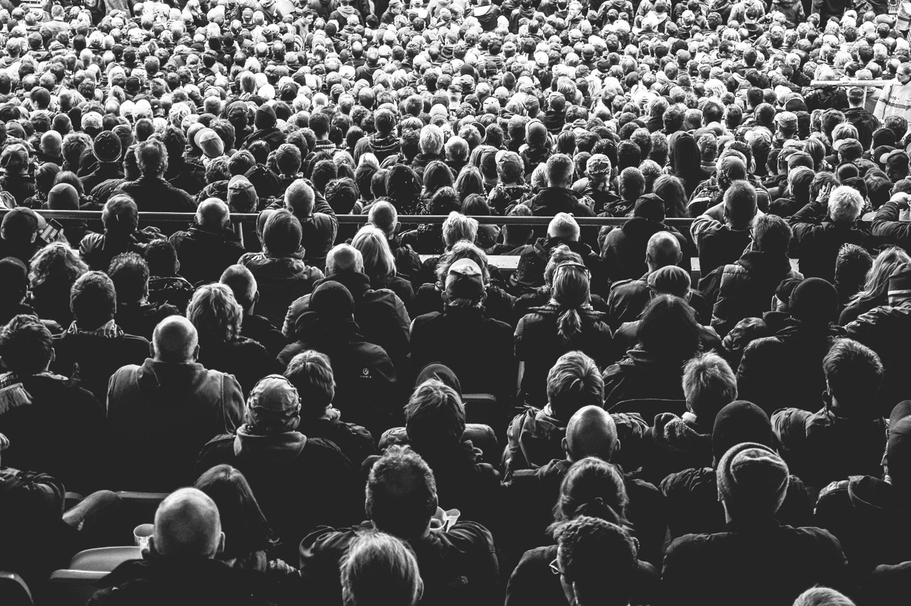

Art Direction, Performance, and Lifecycle Flow.
This is for Design Control. When the screen shrinks, you don't just want a smaller image—you want a completely different crop (e.g., Portrait vs. Landscape) so the subject remains in focus.

<picture> <!-- Mobile: Portrait Crop (Focus on subject) --> <source media="(max-width: 600px)" srcset="crop.jpg" /> <!-- Tablet: Square Crop --> <source media="(max-width: 1024px)" srcset="medium.jpg" /> <!-- Desktop: Full Wide Landscape (Fallback) --> <img src="large.jpg" width="1600" height="800" /> </picture>
<picture> element, the browser evaluates
<source> tags from top to bottom and selects the first one whose media query matches.
If none match, it falls back to the <img> tag. This mechanism is used for art
direction, allowing developers to control which image is used at different breakpoints, unlike
srcset, which only controls resolution.
1. srcset: Generated first (often by a framework), providing the browser with a "menu" of multiple image candidates and their true widths.
2. sizes: Used by the browser at runtime to determine the intended rendered width.
Based on that runtime math, the browser selects the most appropriate candidate from the
srcset menu.
srcset="img.jpg 1x, img-2x.jpg 2x"
Used when the image is a fixed width in your CSS (e.g., an icon always exactly
50px). You do not use the sizes attribute here.
The Behavior: Browser ignores layout and just matches screen density.
srcset="small.jpg 400w, large.jpg 800w"
Used for responsive images that stretch and shrink. You MUST
use the sizes attribute with this!
The Behavior: Browser predicts layout size using sizes, then picks closest intrinsic width.
<img srcset="small.jpg 480w, medium.jpg 800w, large.jpg 1200w" sizes="(max-width: 600px) 100vw, 33vw" width="1200" height="800" />
480w informs the browser of the file's physical intrinsic width.
The browser uses the sizes rule to calculate the layout width, multiplies it by the Device Pixel Ratio (DPR), and then picks the closest physical match from the srcset menu.
The ultimate "connected" mental model. The browser's preloader downloads images before it reads your CSS. Therefore, it relies entirely on the HTML attributes to do its math.
width &
height)
The browser needs to know the shape of the image before it arrives.
width="1200" height="800", calculates a 1.5 aspect
ratio, and carves out a blank box in the layout immediately.
sizes) — *The Core Engine*
Because the browser can't
read CSS yet, sizes is your "Promise" of how much screen width the image will
eventually take up.
(max-width: 600px) 100vw, 33vw. 33vw (one-third of screen). sizes, it has to guess. It
safely assumes 100vw (full screen). So on a 1200px screen, it downloads a massive
1200px image, even though your CSS will later shrink it to 400px. Result: 3x Bandwidth
Waste.
The browser bridges the gap between "CSS Pixels" and "Screen Pixels". High-end screens pack multiple physical pixels into a single CSS pixel to make things sharp.
400px (CSS Need) × 2 (Device Density) = 800px. The browser demands
800 physical pixels to keep it crisp.
srcset or
<picture>)
Now the browser looks at the "Menu" you provided (whether it's CDN URLs or local files).
480w, 800w, 1200w. It needs exactly
800px (from Phase 3), so it selects the 800w image.
The image arrives. Now your CSS finally takes over for the visual presentation.
aspect-ratio: 1.5 acts as the skeleton.width: 100%; object-fit: cover fills that skeleton
perfectly, while a CSS animation fades it in.What happens if the actual image size provided doesn't match the CSS container size you force it into?
Scenario: Your actual image is 500px wide, but your CSS forces
it to fill a massive 2000px container.
Result: The browser has to stretch 500 pixels across 2000 pixels of screen real estate. The image becomes severely pixelated and blurry. Never force a small image into a huge container.
Scenario: Your actual image is a massive 2000px wide, but your
CSS forces it into a tiny 300px container (and you didn't use
srcset).
Result: It looks sharp, but you forced the user to download a huge 3MB file just to display a tiny thumbnail. This destroys page load speed and eats user data.
The Interview Question: "In a massive E-Commerce site, the product grid changes
constantly based on sidebars, filters, and screen sizes. How can we possibly hardcode the perfect
sizes attribute?"
You do not need to be pixel-perfect. If your CSS makes an image 31.5vw wide,
but your HTML says sizes="33vw", that is completely fine! The browser will simply
download an image that is slightly larger than necessary.
The Goal: Stop the browser from panicking and falling back to 100vw. A
slight overestimation (like 33vw) is a massive performance win compared to a full-screen 100vw
disaster.
fill)
Next.js automatically generates a massive srcset menu powered by its Image CDN
(resizing your images on-the-fly via URL parameters like ?w=800&q=75). However,
it cannot read your CSS either.
If your image layout is fluid (using the fill prop),
Next.js safely defaults to asking the CDN for sizes="100vw". To prevent the
bandwidth disaster, you must manually provide the sizes:
<Image src="/product.jpg" fill sizes="(max-width: 768px) 100vw, (max-width: 1200px) 50vw, 33vw" />
This explicitly tells the browser (and the Next.js CDN) to only request a 33vw
sized file on desktop, saving huge amounts of data.
How do we combine Next.js, external CDNs (like Cloudinary/Imgix), and Art Direction in a production architecture?
Approach: Use Next.js <Image> with a custom
loader.
Instead of using Next.js's built-in server for optimization, you tell Next.js how to construct
URLs for your external CDN (like Cloudinary). Next.js will then automatically generate the
massive srcset using your CDN's dynamic URL parameters.
// 1. Define the CDN Loader const cloudinaryLoader = ({ src, width, quality }) => { return `https://res.cloudinary.com/demo/image/upload/w_${width},q_${quality || 75}/${src}` } // 2. Pass it to the Image component <Image loader={cloudinaryLoader} src="hero.jpg" width={1200} height={800} />
Approach: You cannot use the standard <Image>
component for Art Direction (swapping entirely different crops based on screen size). Next.js
only outputs an <img> tag with a srcset, which strictly handles
resolution, not design.
To achieve Art Direction while still utilizing the Next.js/Cloudinary CDN optimizer, you use the
modern getImageProps() API (Next.js 14+). This allows you to generate optimized CDN
strings and manually inject them into a raw HTML <picture> tag.
// 1. Generate optimized CDN strings via Next.js API const { props: mobile } = getImageProps({ src: '/portrait.jpg', width: 600 }); const { props: desktop } = getImageProps({ src: '/landscape.jpg', width: 1200 }); // 2. Inject into raw HTML <picture> <picture> <source media="(max-width: 768px)" srcSet={mobile.srcSet} /> <img {...desktop} alt="Hero" /> </picture>